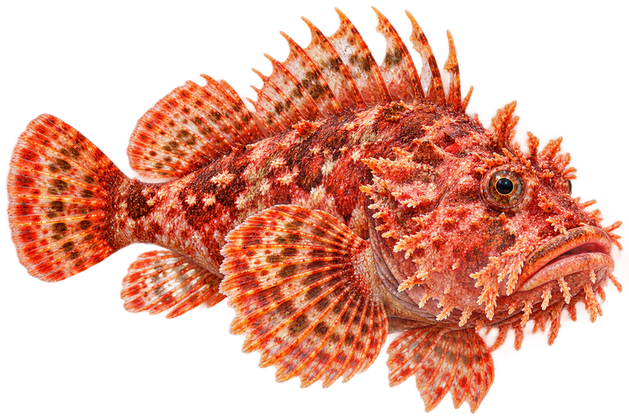

Fish
Red scorpionfish
Scorpaena scrofaA master of camouflage that waits motionless on the reef for prey to come close.
Venomous spines.Its fin spines can give a very painful sting. Watch where you put your hands and knees.
Scan the rocks closely; it rarely moves.